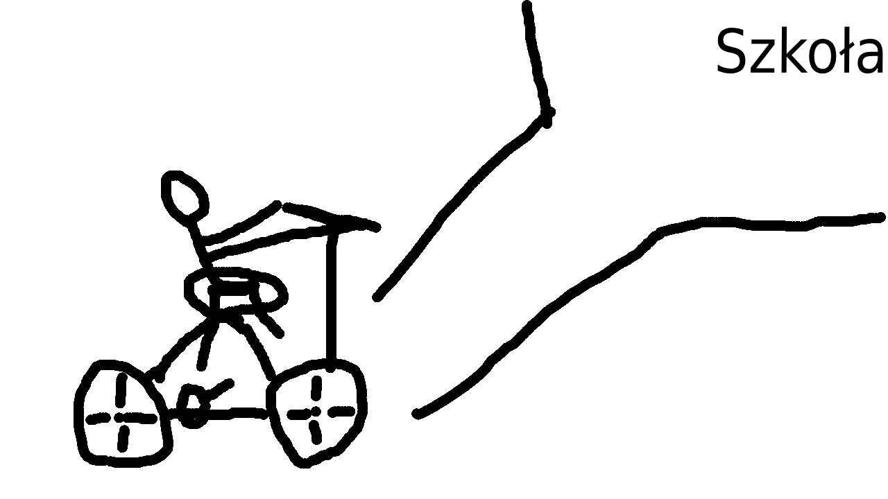

Własny temat
Lubię jeździć na moim czarnym rowerze z żółtymi paskami, posiadam czarno-białego kota, którego nazwałem Magia, nazwałem mojego kota
tak ponieważ jak wszedł do jakiegoś pokoju to wyszedł z innego. Mój kot jest prawie tak samo leniwy jak ja. Lubię w wolmym czasie grać w gry planszowe
oraz komputerowe, sam zrobiłem trochę gier w python za pomocą pygame
oraz w lua za pomocą love, ale nie programowałem jedynie gier modyfikowałem moją
ulubioną grę minecraft za pomocą fabric, robiłem pluginy do minecraft za pomocą bukkit. Codziennie jeżdżę rowerem do szkoły
aby uczyć się nowych rzeczy nie zawsze ciekawych, ale zawsze się czegoś nauczę. Czasami jeżdżę rowerem nawet dalej niż do szkoły kilka razy nawet
byłem 15 kilometrów od domu, a raz w jeden dzień przejechałem łącznie ponad 30 kilometrów.Najbardziej mi frajdę sprawia jeżdżenie rowerem w miejscu, w
którym mnie nigdy nie było, driftowanie rowerem niestety teraz w aktualnym momencie już nie mogę tego robić, ponieważ mam słabo działający tylni hamulec
rowera, lubię także jak jadę z górki rowerem lub ogólnie bardzo szybko. Chciałbym w szkolę zoragnizować wycieczkę rowerową najlepiej na jak najdłużej żebyśmy
mieli jak najmniej lekcji w szkolę.
